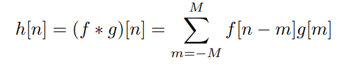
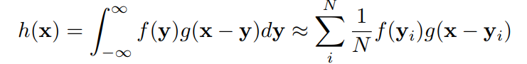
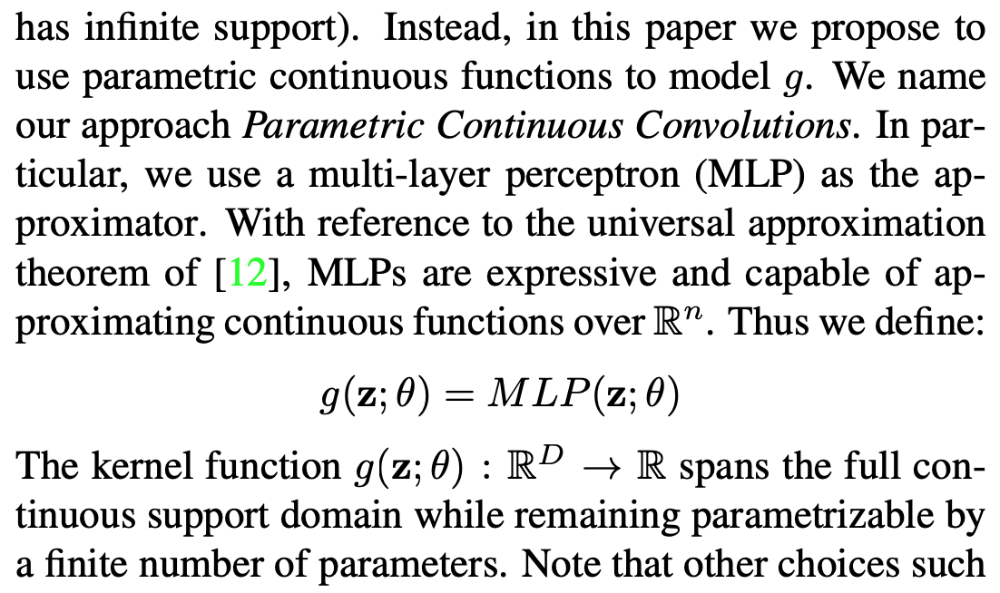
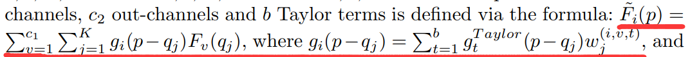
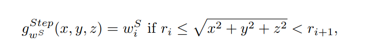
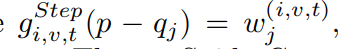
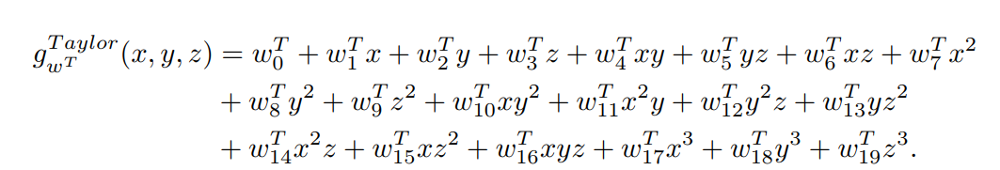

『Xu』Parametric Continuous Convolutions / SpiderCNN
Paper One:
Deep Parametric Continuous Convolutional Neural Networks


在离散卷积中，卷积核的权重是一个需要学习的参数，是通过直接给定卷积模板中的某个位置对应的初始权重来学习的。例如离散卷积中的卷积核$g$应该是这样的
$$
S\rightarrow {R} ,S={-M,-M+1,…,M-1,M}
$$
也就是可以将g想象成一个大小固定的离散的数组，可以通过下标「也就是离散点的位置或者是图像的位置」来得到对应的参数/权重。但是很明显这样的参数分配方式在点云卷积的过程中是不能被使用的，因为三维点的位置是不固定的，不一定是离散的，所以不能通过下标的方式去得到数组的参数「有点类似与连续函数和数组的区别，连续函数的x坐标是连续的」。所以文章只能通过一个通过参数控制的连续函数来表示卷积核「Parametric Continuous Convolutions」
所以整个核函数就是一个布满整个空间的连续函数，在二维场景下如下图所示
因此为了得到一个在空间中连续的函数，作者使用了 Multi-Layer Perceptron 来拟合核函数。

Paper Two
SpiderCNN: Deep Learning on Point Sets with Parameterized Convolutional Filters
提出了一种新的卷积核，这个卷积核是由两个函数组成的，一个是简单的阶跃函数「输入在某一个范围内，输出的值是一个常数」，第二个是三阶的泰勒展开式。
整个卷积的过程如下所示

$\widetilde{F}_i$代表的是输出层的feature，$F_v$表示的是输入层第$v$个节点的input feature，可以看到卷积核$g_i$是由b个泰勒展开式以及b个对应的可训练常数组成的。
- 可训练常数：


这个常数就是阶跃函数，从定义中我们可以看到，它是与邻域内的点与球心的半径有关的。
- 三阶泰勒展开式：

因此，通过邻域内的每一个点的相对位置可以与可训练的权重加权得到泰勒权重。
CONLUSION
现在大部分的所谓的直接对于点操作的「convolution」，其实都是类似于图神经网络的。
- 如何表示两个点之间的关系「例如坐标差 / 角度 / etc.」
- 如何从两个点的关系上提取出卷积核的权重 「例如MLP / 泰勒展开式 / etc.」
- 如何定义neighborhood 「例如knn / radius-based nn / etc.」
这几个点都是被经常关注的，通过对这几个点的改进来作出更好的效果。